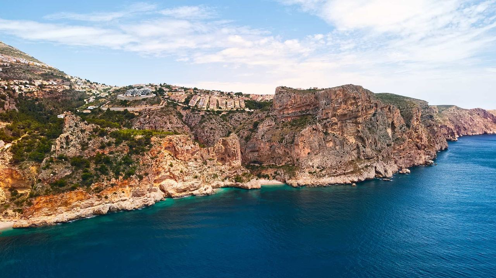
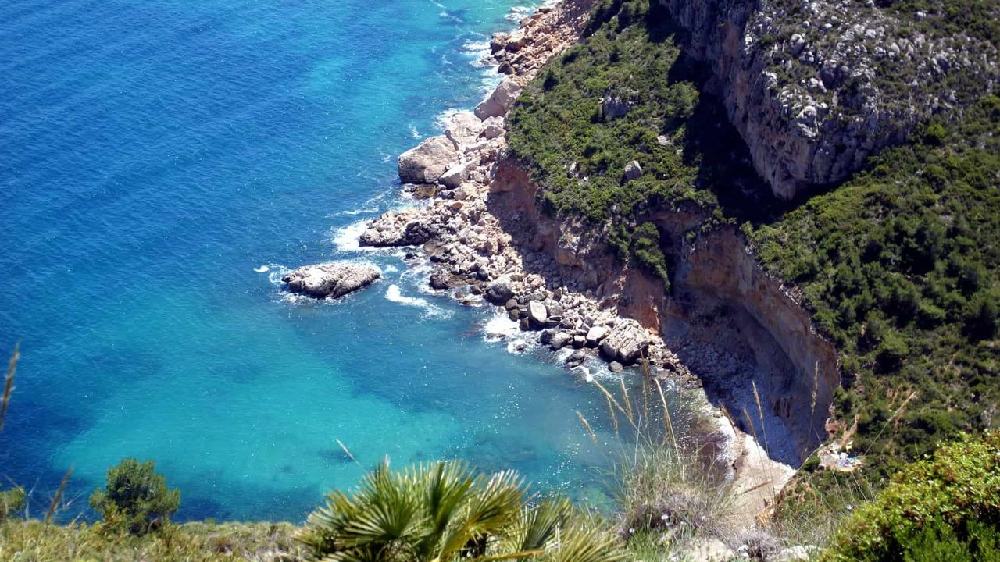
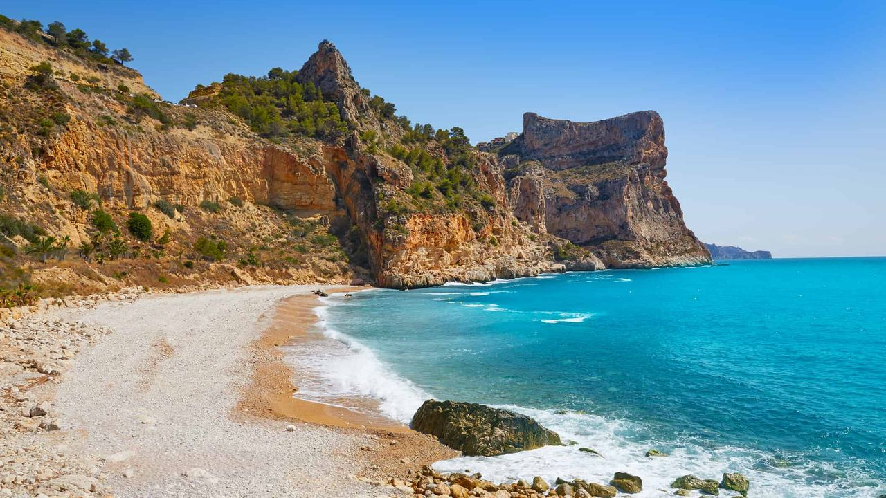
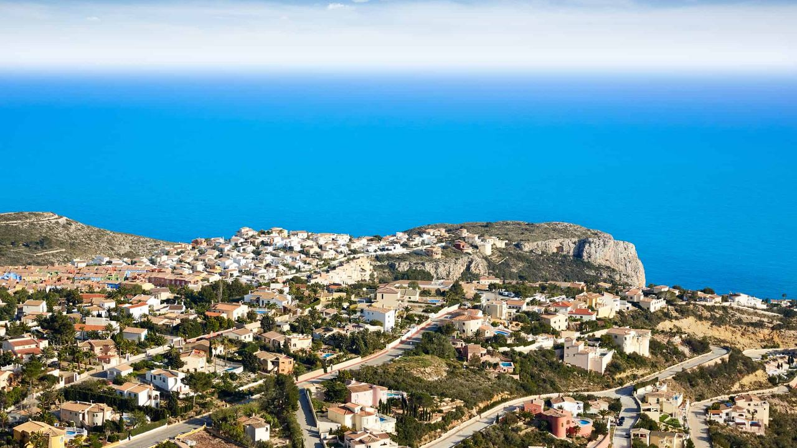
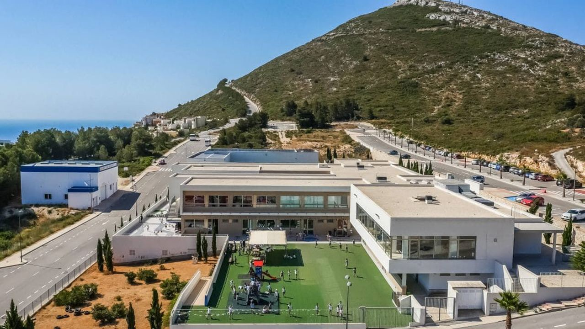
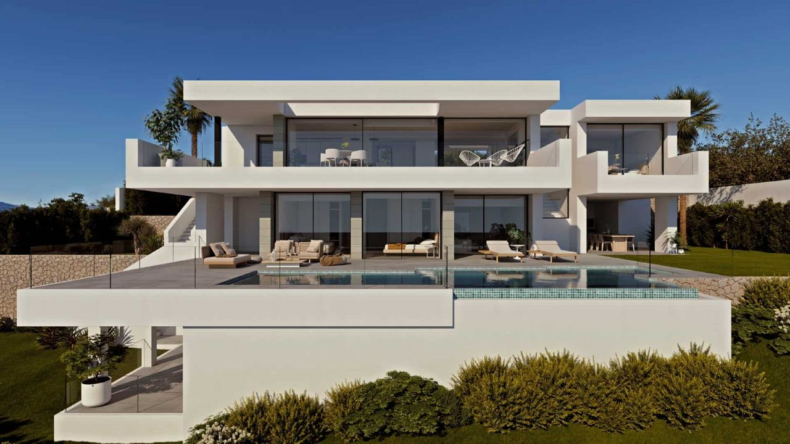
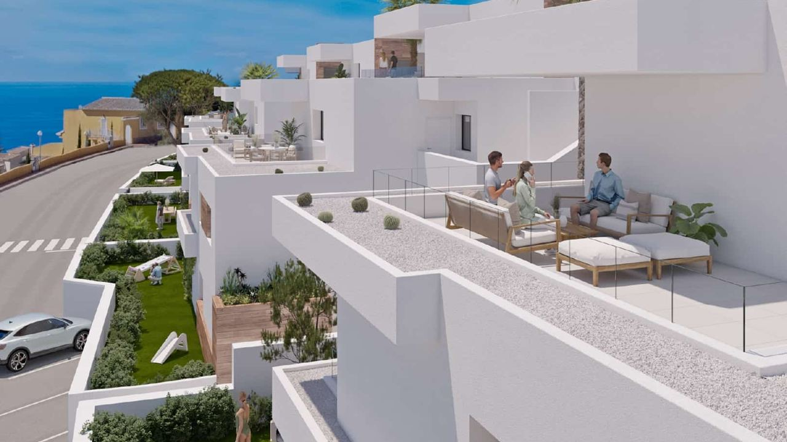

Places · Costa Blanca North
Discover Cumbre del Sol: An Area Guide for Buyers
 By Anita Orłowska · · updated · 3 min read
By Anita Orłowska · · updated · 3 min read

In short: Cumbre del Sol is a large residential area on the cliffs of Benitachell, on the northern Costa Blanca, between Jávea and Moraira. It is known for sea views, quiet streets and the Cala del Moraig cove below it. Two small shopping centres, Adelfas and Lirios, cover daily needs all year, and the British-curriculum Lady Elizabeth School is on site. Homes are mainly modern villas and apartments on the hillside. Alicante airport is about 75 km away and Valencia about 100 km.
Cumbre del Sol is one of the best-known addresses on the northern Costa Blanca. It is quieter and greener than the resort towns further south, and most homes look straight out over the Mediterranean. Here is what the area offers, who it suits and what to check before you buy.
Where Cumbre del Sol is

- In the municipality of Benitachell (El Poble Nou de Benitatxell), on the hill between Jávea and Moraira.
- Calpe and the Peñón de Ifach are about 12 km away, Benidorm about 30 km.
- The AP-7 motorway is about 10 km away.
- Alicante airport is about 75 km away (around an hour by car) and Valencia airport about 100 km.
The northern Costa Blanca has a greener landscape and a milder summer than the south. For a comparison with other areas, see Costa Blanca or Costa del Sol.
Coves and the sea

There are no long sandy beaches here. Instead the coast has rocky coves with very clear water.
- Cala del Moraig: the best-known cove, below the cliffs, with a pebble beach, a sea cave and deep blue water. It is popular with snorkellers and divers. It gets busy in July and August, so go early.
- Cala de los Tiestos: a small, quiet cove reached by sea or a steep footpath.
- Sandy beaches are a short drive away in Jávea (Arenal) and Moraira.
Shops and services all year

Cumbre del Sol is lived in all year, not only in summer. Two shopping centres sit at the two entrances: Adelfas on the Benitachell side and Lirios on the Moraira side. Between them you find a supermarket, restaurants, bars, a pharmacy, a medical centre, banks and post boxes for owners.
For larger shops, hospitals and the weekly markets, Jávea, Moraira and Teulada are 10 to 15 minutes away by car. A car is needed: the area is spread across a hillside with steep roads.
The international school

The Lady Elizabeth School sits at the northern entrance of Cumbre del Sol. It teaches the British curriculum from age 2 to 18 and has around 1,300 pupils. Since 2018 the secondary school has been on the same site as the junior school. The school is one reason many families live here all year.
Homes in Cumbre del Sol

Most homes are modern villas and apartments in small complexes, built on terraces down the hill. Much of the area was developed by the local builder VAPF, and new phases are still being added.
- Apartments: usually 2 or 3 bedrooms, with a shared pool and terraces with sea views.
- Villas: from family villas to large contemporary homes with infinity pools. Villas with open sea views often cost well over €1 million.
Prices depend mostly on the view, the orientation and how steep the plot is. For what to look for in a high-end home, see buying a luxury villa in Spain.
Who it suits, and what to check
Cumbre del Sol suits buyers who want peace, sea views and a well-kept area, families who want the international school, and holiday-home owners. It is less suited to those who want to walk to a town centre or a sandy beach.
- Off-plan homes: ask for a bank guarantee for each payment. See new build or resale.
- The plot: steep plots mean stairs and retaining walls. Check access by car and the upkeep of walls and gardens.
- Community fees: ask for the fees and the latest minutes. See comunidad de propietarios.
- Holiday letting: the home needs a tourist licence in the Valencian Community. See short-term rental rules.
- Purchase costs: see how to buy in Spain.
Frequently asked questions
Where is Cumbre del Sol?
In Benitachell, Alicante province, on the hill between Jávea and Moraira on the northern Costa Blanca.
How far is Cumbre del Sol from the airport?
Alicante airport is about 75 km away, around an hour by car. Valencia airport is about 100 km away.
Does Cumbre del Sol have a beach?
It has rocky coves rather than sandy beaches. The best known is Cala del Moraig. Sandy beaches are a short drive away in Jávea and Moraira.
Is there a school in Cumbre del Sol?
Yes. The Lady Elizabeth School teaches the British curriculum from age 2 to 18 on one campus at the northern entrance.
Is Cumbre del Sol busy all year?
Yes. Many owners live there all year, and the two shopping centres stay open outside the summer.
Do I need a car in Cumbre del Sol?
Yes. The area is large and hilly, and towns, hospitals and beaches are reached by car.
Find your home in Cumbre del Sol

We can show you current apartments and villas in Cumbre del Sol, compare views and fees, and arrange viewings. Contact us.
Sources: Wikipedia – Lady Elizabeth School · Wikipedia – El Poble Nou de Benitatxell